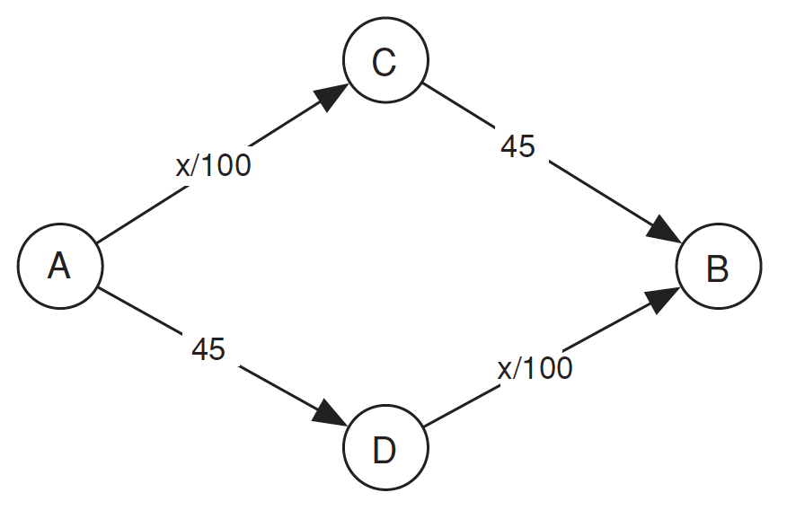
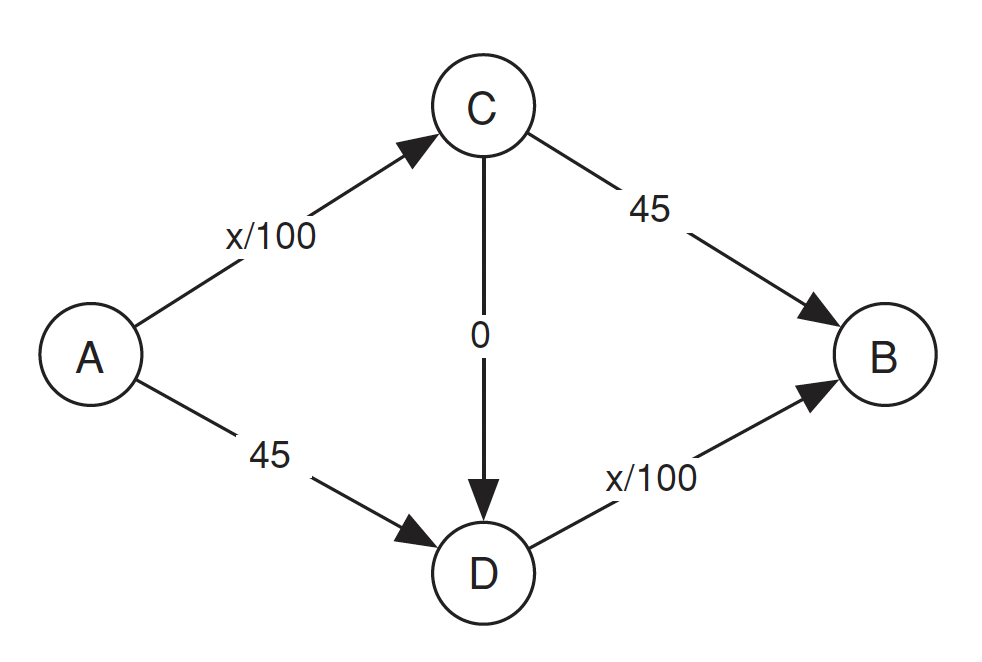

假設在一個國家內有兩個重要的城市，設為 \(A\) 城與 \(B\) 城，這兩個城市是該國的金融重鎮，每天都有許多人與車在這兩個城市之間往來。現在假設這個國家的所有駕駛都是要從 \(A\) 城前往 \(B\) 城，途中有兩條路可以選，一個是經過 \(C\) 城，另一個則是經過 \(D\) 城。以下是這個國家的交通流量網絡圖，每條路線都有一個指定的行駛時間(以分鐘計算)，該時間取決於該邊線上的交通量。

假設總共有 \(4000\) 輛車要通過，其中通過 \(AC\) 與 \(DB\) 路線的時間皆為 \(x / 100\)，因此若全部的車輛被平均分配走上下的路，總時間為 \(4000/100 + 45 = 65\) 分鐘。
我們所描述的交通模型實際上是一個賽局，其中行為者對應到駕駛，每個行為者的可能策略包括從 \(A\) 到 \(B\) 的可能路線。每個行為者的報酬是其行車時間的負值（我們使用負值是因為較長的行車時間是不好的）。這個賽局可以有任意數量的行為者，每個行為者可以有任意數量的可用策略，每個行為者的回報取決於所有行為者所選擇的策略。Nash equilibrium 仍然是一組策略，每個行為者對應一個策略，使得每個行為者的策略對於其他所有行為者都是最佳回應。
在這個交通賽局中，通常沒有優勢策略。然而，這個賽局其實存在 Nash equilibrium：任何一組策略中駕駛在兩個路線之間均衡分配，即每個路線上有 \(2000\) 輛車的情況都是一個 Nash equilibrium，而這些是唯一的 Nash equilibrium。我們想要證明的是：假設每個人在每個路線上的行駛時間相等，則總是存在一個均衡。
證明 Nash equilibrium 存在1
假設 \(L_{e}(x)\) 是每個人在路線 \(e\) 上行駛時的行駛時間函數，其中 \(x\) 人選擇該路線。假設有一個交通網絡，其中 \(x_{e}\) 人在路線 \(e\) 上行駛。令 \(T(e)\) 表示路線 \(e\) 的時間，定義為：
\[ T(e) := \sum _{i=1}^{x_{e}}L_{e}(i)=L_{e}(1)+L_{e}(2)+\cdots +L_{e}(x_{e}), \]
當 \(x_e = 0\) 時，\(T(e) = 0\)。將交通網絡的總時間定義為圖中每條路線的時間之和。選擇一組能夠最小化總時間的路線。這樣的選擇必然存在，因為路線的選擇有限。這將成為一個均衡狀態。
假設存在一個相反的情況。那麼，至少有一名駕駛可以改變路線並改善行駛時間。假設原始路線為 \(e_{0},e_{1},\cdots ,e_{n}\)，而新路線為 \(e'{0},e'{1},\cdots ,e'{m}\)。令 \(E\) 為交通網絡的總時間，考慮當移除路線 \(e{0},e_{1}, \cdots e_{n}\) 時的情況。每條路線 \(e_{i}\) 的時間將減少 \(L_{e_{i}}(x_{e_{i}})\)，因此 \(T\) 將減少：
\[ \sum _{i=0}^{n}L_{e_{i}}(x_{e_{i}}). \]
這就是取原始路線所需的總行駛時間。如果然後添加新路線 \(e'{0},e'{1},\cdots ,e'_{m}\)，則總時間 \(E\) 將增加新路線所需的總行駛時間。因為新路線比原始路線更短，所以相對於原始配置，\(T\) 必定下降，與假設原始路線最小化總能量的假設相矛盾。因此，最小化總時間的路線選擇是一個均衡狀態。
Braess’s Paradox
假設今天該國政府發現該年歲入存在餘額，在經過立法諸公商議後，決定在 \(C\) 與 \(D\) 之間蓋一條快速道路減少從 \(A\) 城到 \(B\) 城的時間(方向為 \(C\) 到 \(D\))。為了簡化，我們將該條快速道路所需的行使時間設定為 \(0\)，無論有多少車經過。

有趣的是，雖然在上述假設下的這個交通賽局仍然存在 Nash equilibrium，但他會讓每個駕駛的交通時間增加。注意到，沒有任何駕駛能從改變他們的路線中獲益：根據目前 \(C\) 和 \(D\) 之間蜿蜒的交通情況，任何其他路線現在都需要 \(85\)分鐘。
另外，為什麼這是唯一的均衡狀態？透過檢查建立在從 \(C\) 到 \(D\) 的快速道路是否實際上使得經過 \(C\) 和 \(D\) 的路線對所有駕駛來說都成為一種優勢策略：無論當前的交通模式如何，通過切換路線經過 \(C\) 和 \(D\)，駕駛人都會受益。
Footnotes
Braess’s paradox - Wikipedia. (2023, March 24). Braess’s Paradox - Wikipedia. https://en.wikipedia.org/wiki/Braess%27s_paradox↩︎